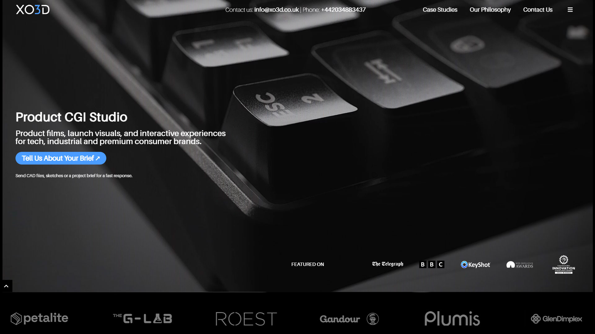
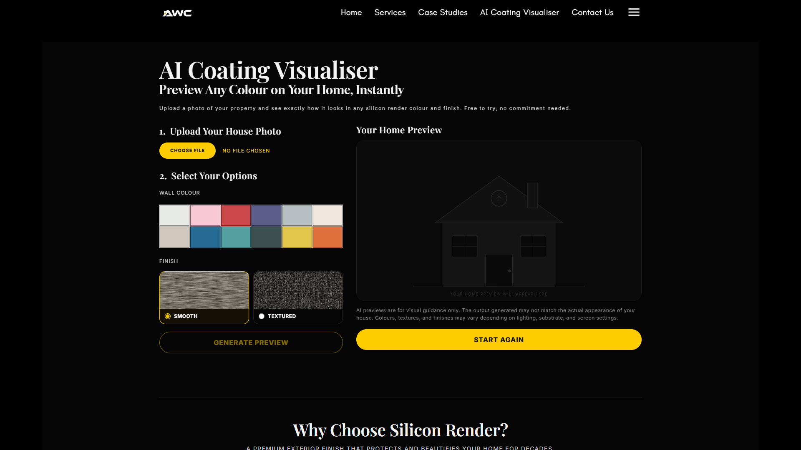
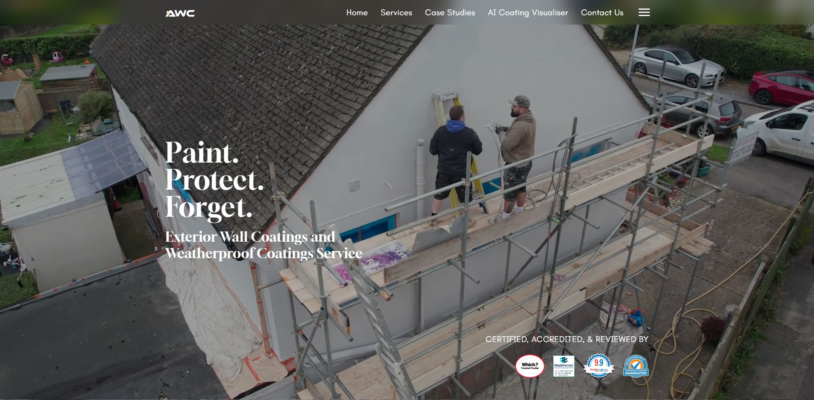
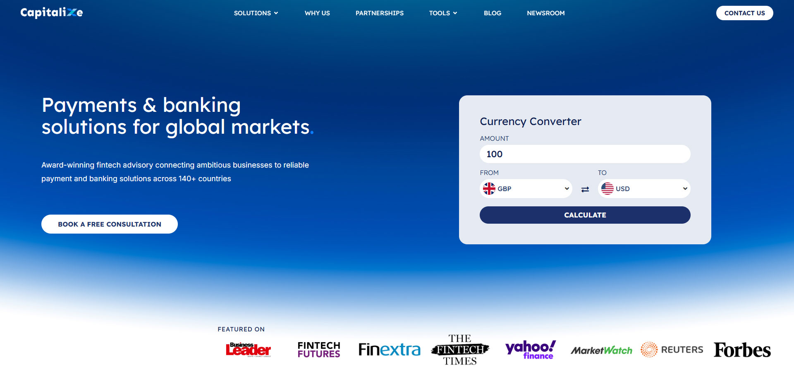
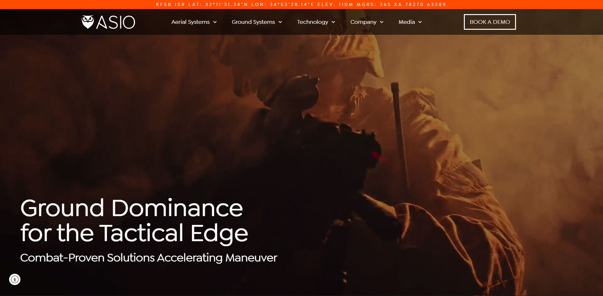
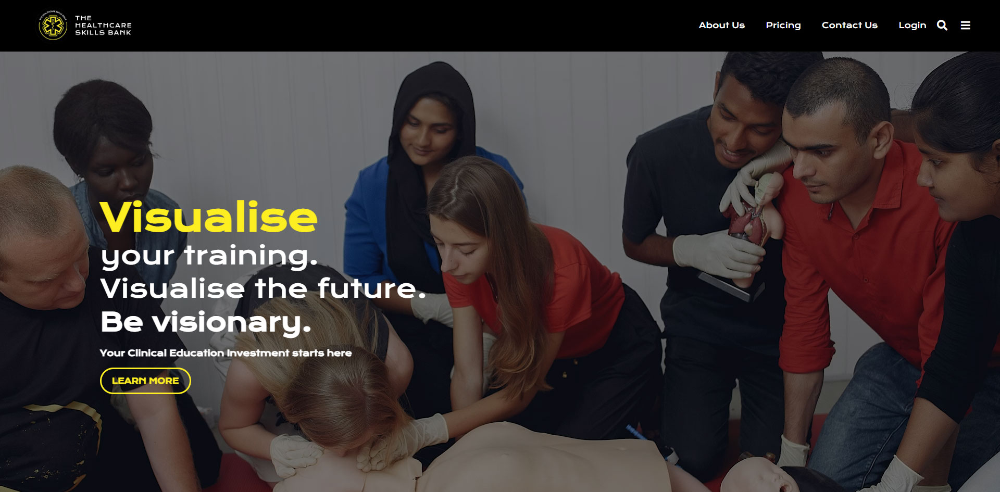
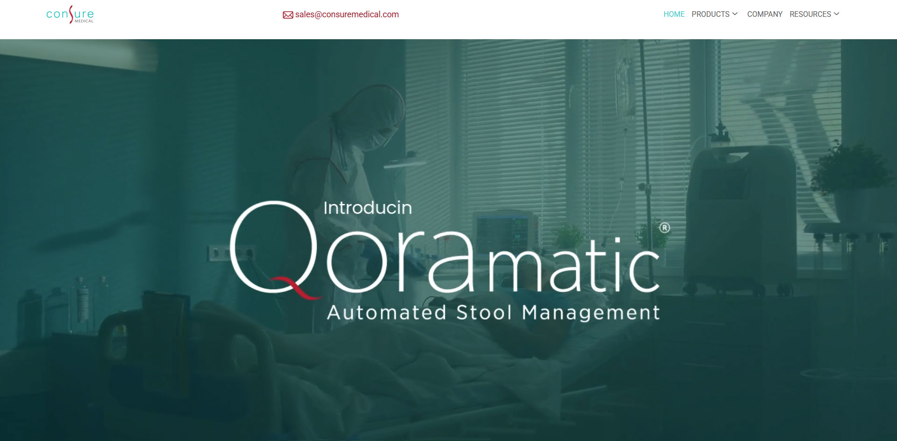
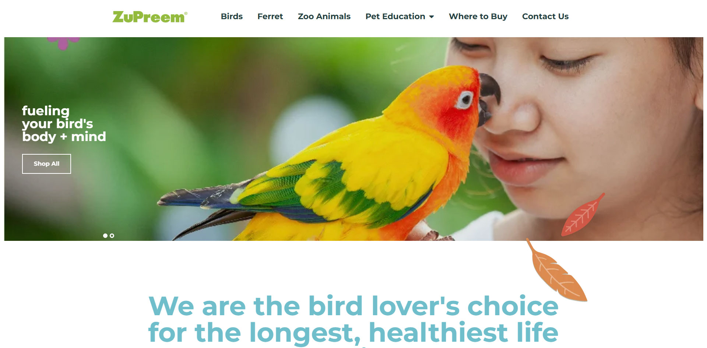
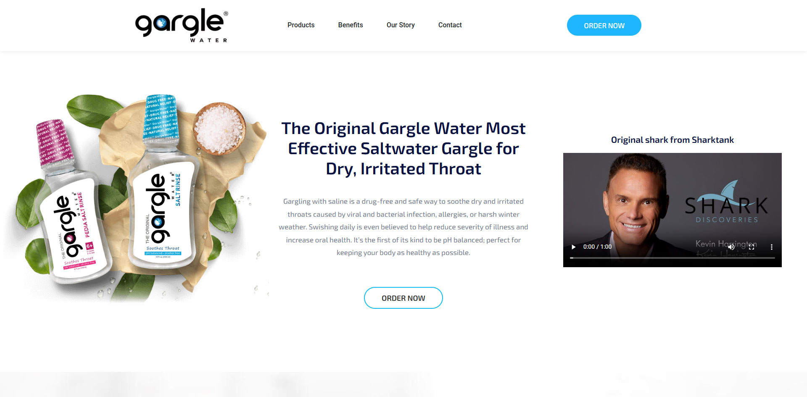
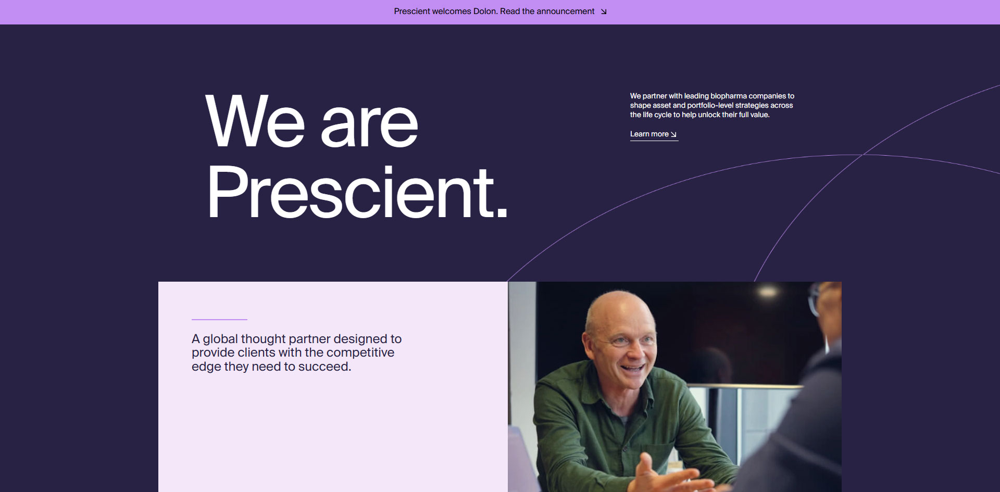

01 / PORTFOLIO
Selected work.
Real businesses. Different challenges.
Digital experiences with a clear purpose.
FEATURED PROJECT / LONG-TERM WEBSITE OWNERSHIPJULY 2022–PRESENT
● ● ●xo3d.co.uk↗

Explore the case study ↗3D VISUALISATION STUDIOXO3D
Head of Web Development · Sole Developer
End-to-end website ownership: an Astro rebuild, large-scale content migration, technical SEO, faster performance, and interactive 3D experiences.
48 → ~95Mobile Lighthouse
9.6s → 2.1sLargest Contentful Paint
1,345Schema errors resolved
AstroCloudflare PagesSEO & GEOPerformance
FEATURED PROJECT / AI-POWERED INTERACTIVE EXPERIENCEAPRIL 2026–PRESENT
● ● ●allweathercoating.co.uk↗

Explore the case study ↗CLIENT PROJECT THROUGH XO3DAll Weather Coating
AI Visualiser
Full-Stack Web Developer · Built from scratch
Upload a house photo, choose coating colours, and generate a preview. I built the experience, integrated the Gemini API, added usage safeguards, and connected lead capture to the owner’s email.
GeminiAI preview integration
6 triesUsage limit per user
EmailDirect lead delivery
Full-stackGemini APILead capture
● ● ●allweathercoating.co.uk↗

Read the case study ↗All Weather Coating
03Full-Stack WordPress Developer / Elementor Specialist
Sole Developer · July 2022–Present · Client through XO3D
Built from scratch and redesigned from a coworker’s Figma designs. Migrated from WP Engine to SiteGround, completed SEO and performance improvements, and continue ongoing maintenance.
WordPressElementorHosting migration
● ● ●capitalixe.com↗

Visit website ↗Capitalixe
04Web Developer
Corporate website for a financial services provider with structured content, clean navigation, and a professional visual identity.
CorporateAccessibilityUX Structure
My contribution +
- Developed a clean UI aligned with the company’s brand identity.
- Structured pages for SEO and stronger user flow.
- Ensured responsive and accessible design across devices.
● ● ●asiotech.com↗

Visit website ↗Asiotech
05Web Developer
Business website presenting technology services through a modern responsive layout built for clarity and usability.
ResponsivePerformanceB2B
My contribution +
- Built a modern, responsive layout.
- Focused on clarity, performance, and usability.
● ● ●theparamedicskillsbank.co.uk↗

Visit website ↗The Paramedic Skills Bank
06Web Developer
Educational platform providing structured learning resources for paramedics with strong content organization and accessibility.
WordPressHealthcareLearning
My contribution +
- Developed a content-driven WordPress site.
- Organized training materials for better accessibility.
- Ensured a responsive and user-friendly interface.
● ● ●www.consuremedical.com↗

Visit website ↗Consure Medical
07Web Developer
Medical-focused website designed to present services with clarity and build trust through a clean, accessible interface.
HealthcareTrust DesignAccessibility
My contribution +
- Delivered a clean and accessible UI.
- Optimized the layout for clarity and credibility.
● ● ●zupreem.com↗

Visit website ↗ZuPreem
08Web Developer
Brand website for a pet nutrition company showcasing products and information through a consistent and engaging presentation.
Brand WebsiteProduct UXConsumer
My contribution +
- Implemented a product-focused layout.
- Maintained brand consistency across pages.
● ● ●garglewater.com↗

Visit website ↗Garglewater
09Web Developer
Brand website for Garglewater designed to present the product clearly through a polished, modern, and easy-to-navigate digital experience.
Brand WebsiteResponsiveUI Clarity
My contribution +
- Built a modern, responsive interface aligned with the brand presentation.
- Structured content for clarity, usability, and stronger visual flow.
- Supported a clean page hierarchy across core website sections.
● ● ●prescienthg.com↗

Visit website ↗Prescient Healthcare Group
10Web Developer
Consulting firm website designed to emphasize expertise, service readability, and a clear professional structure for healthcare audiences.
ConsultingReadabilityHealthcare
My contribution +
- Built structured corporate pages.
- Focused on professional design and readability.